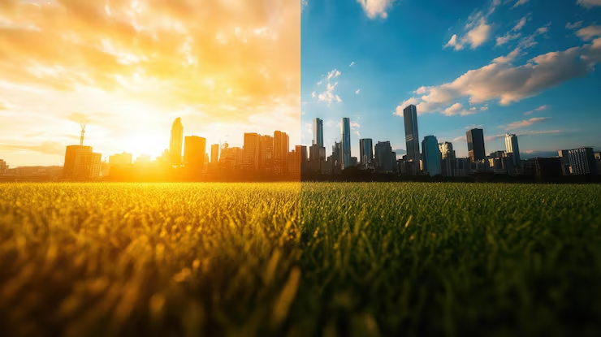
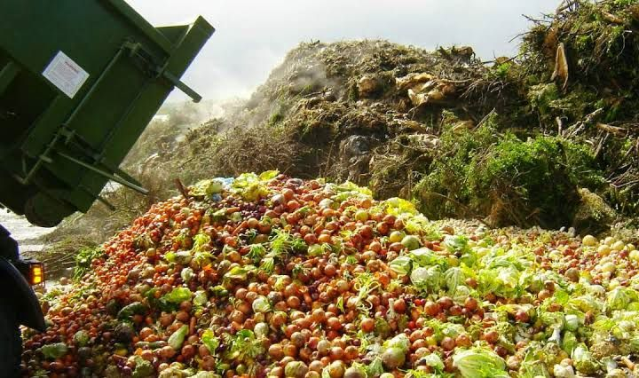
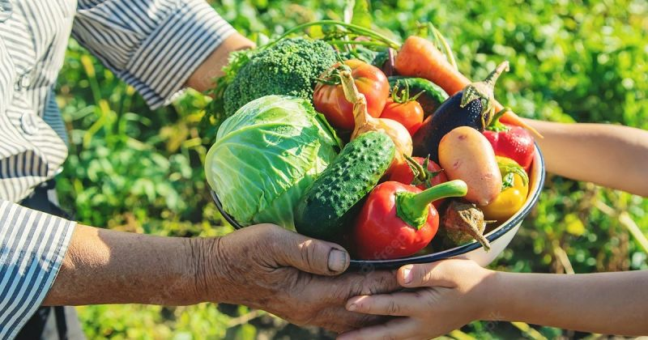

O desperdício de alimentos é um desafio que afeta toda a cadeia de produção e distribuição. Enquanto agricultores, restaurantes e estabelecimentos comerciais possuem alimentos excedentes que muitas vezes acabam descartados, milhares de pessoas ainda enfrentam dificuldades para ter acesso a uma alimentação adequada.
A falta de conexão entre quem possui alimentos disponíveis e quem precisa deles dificulta o aproveitamento desses recursos.
A EloVerde surge para transformar essa realidade, criando uma rede de colaboração que aproxima produtores rurais, restaurantes e organizações sociais, dando um novo destino aos alimentos que poderiam ser desperdiçados.

A EloVerde utiliza a tecnologia como ferramenta de conexão e transformação social.
Nossa proposta consiste em uma plataforma digital desenvolvida com tecnologias web, permitindo aproximar agricultores, restaurantes e ONGs em um ambiente acessível e intuitivo.
Estruturação das páginas e organização do conteúdo.
Estilização, identidade visual e responsividade.
Interatividade, validação de formulários e manipulação dinâmica.
Conceito aplicado à simulação de monitoramento inteligente.
A solução também explora conceitos de Edge Computing por meio de uma simulação de monitoramento inteligente ampliando as possibilidades de aplicação tecnológica na cadeia de distribuição de alimentos.
A EloVerde tem como principal objetivo reduzir o desperdício de alimentos por meio da tecnologia e da colaboração entre diferentes setores da sociedade.
Facilitar o compartilhamento de alimentos excedentes.
Oferecer alternativas para alimentos que poderiam ser descartados.
Contribuir para a diminuição do desperdício de recursos naturais.
Ampliar o acesso a alimentos para comunidades vulneráveis.
A EloVerde foi desenvolvida para atender três grupos principais, que juntos formam uma rede de colaboração e aproveitamento alimentar.
Produtores que possuem excedentes de colheita ou alimentos que não conseguiram comercializar e buscam alternativas para evitar o descarte.
Empreendimentos que desejam aproveitar melhor seus recursos, compartilhar excedentes próprios para consumo e estabelecer conexões.
Instituições que atuam no atendimento de comunidades em situação de vulnerabilidade e podem receber alimentos.

A EloVerde transforma excedentes alimentares em oportunidades, promovendo benefícios ambientais, sociais e econômicos.
Redução do descarte de alimentos que ainda podem ser aproveitados.
Aproximação entre produtores, restaurantes e organizações sociais.
Melhor aproveitamento dos recursos naturais utilizados na produção de alimentos.
Ampliação das oportunidades de acesso a alimentos para comunidades vulneráveis.
